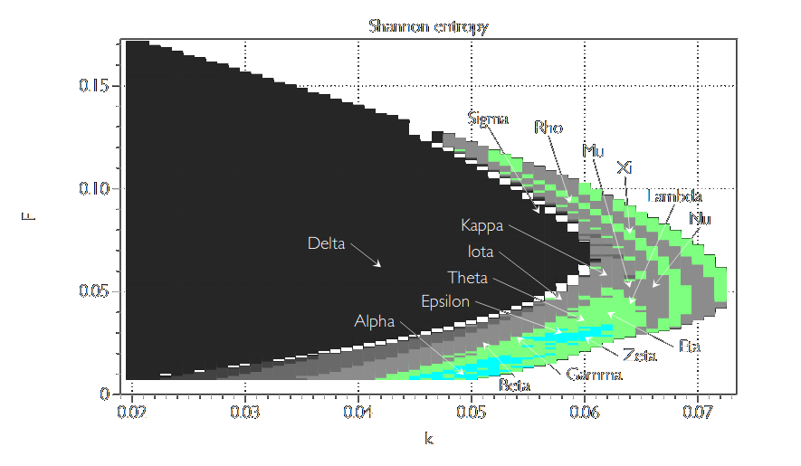

In this post we will study the intriguing Gray Scott model, which describes the reaction between two substances. This model has been the focus of many recent studies ( [1] , [2] , [3] ) for its complex behavior, chaotic nature and relatively simple formulation. It also generates beautiful patterns that are widely used by graphical artists ( creating procedual generated textures ) and has applications in many theoretical fields such as biology in the modeling of human brain development and in physics in the study of phase transitions in complex patterns .
The model may seem simple at first glance, but implementing it will provide some challenges that will help us study very powerful computational methods that can be used in many other algorithms and are a valuable tool for any programmer or scientist. The theoretical aspects will be discussed in a surface level as a proper discussion would be way more involved mathematically and out of the scope of this post.
The Gray Scott model describes the reaction of two chemicals. A reactant '\(B\)' can transform another reactant '\(A\)' into becoming a inert substance. One substance is feed to the system at rate \(f\) and the other is removed (or "killed") at rate \(k\) and both substances are free to diffuse with rates \(D_{A,B}\). The evolution of the system is described by the following equations:
\(\begin{eqnarray*} \frac{\partial}{\partial t} A(t) = D_A \nabla^2 A - A B^2 + f (1 - A),\\ \frac{\partial}{\partial t} B(t) = D_B \nabla^2 B + A B^2 - (f + k) B. \end{eqnarray*} \)
Postponing the theoretical discussion, lets start by solving these equations numerically to get acquainted with the problem. This can be done by considering discrete time intervals and by dividing the system into a grid, where each site has a local concentration of A and B that can diffuse to the neighboring sites. These conditions lead us to the following set of equations for a given time interval \(j\) (notice that since the particular position in the lattice don't matter, as all rates are the same everywhere, we will avoid indexing the position to simplify the notation)
\(\begin{eqnarray*} A_{j+1} = D_A \nabla^2 A_j - A_j B_j^2 + f (1 - A_j),\\ B_{j+1} = D_B \nabla^2 B_j + A_j B_j^2 - (f + k) B_j. \end{eqnarray*} \)
The first question that comes to mind is how to compute the Laplacian operator. The discretization of \(\nabla^2\) can be done in many ways (you can read more about it here ), but for reasons that will become clear soon we will use the five point stencil method, which comprises of estimating the Laplacian (in a square lattice) via:
\( \begin{equation} \nabla^2 f(x, y) \approx f(x-1, y) + f(x+1, y) + f(x, y-1) + f(x, y+1) - 4 f(x,y) \end{equation} \)
This type of discretization is based on the very familiar Taylor series ( quick "proof" ). Implementing these equations is quite straightforward now, but there is a catch. The most "naive" way to do it leads to rather slow code. You can click on it in the panel below and see it for yourself:
Click on the panel bellow to start/stop the simulation.
var s = function( p ) { // p could be any variable name
var grid;
var next;
var running = false;
var dA = 0.2;
var dB = 0.1;
var feed = 0.0208;
var k = 0.0576;
// var dA = 0.14;
// var dB = 0.06;
// var feed = 0.035;
// var k = 0.065;
p.setup = function(){
p.createCanvas(200, 200);
p.pixelDensity(1);
grid = [];
next = [];
for (var x = 0; x < p.width; x++) {
grid[x] = [];
next[x] = [];
for (var y = 0; y < p.height; y++) {
grid[x][y] = {
a: 1,
b: 0
};
next[x][y] = {
a: 1,
b: 0
};
}
}
for (var i = p.width / 2; i < 1.1 * (p.width / 2); i++) {
for (var j = p.height / 2; j < 1.1 * (p.height / 2); j++) {
grid[i][j].b = 1;
}
}
p.noLoop()
}
p.draw = function() {
for (var x = 1; x < p.width - 1; x++) {
for (var y = 1; y < p.height - 1; y++) {
var a = grid[x][y].a;
var b = grid[x][y].b;
next[x][y].a = a + dA * laplaceA(x, y) - a * b * b + feed * (1 - a);
next[x][y].b = b + dB * laplaceB(x, y) + a * b * b - (k + feed) * b;
//next[x][y].a = p.constrain(next[x][y].a, 0, 1);
//next[x][y].b = p.constrain(next[x][y].b, 0, 1);
}
}
p.loadPixels();
for (var x = 0; x < p.width; x++) {
for (var y = 0; y < p.height; y++) {
var pix = (x + y * p.width) * 4;
var a = next[x][y].a;
var b = next[x][y].b;
var c = 255 - p.floor(a * 255);
//c = p.constrain(c, 110, 255);
p.pixels[pix + 0] = c;
p.pixels[pix + 1] = 40;
p.pixels[pix + 2] = 40;
p.pixels[pix + 3] = 255;
}
}
p.updatePixels();
swap();
}
function laplaceA(x, y) {
var sumA = 0;
sumA += grid[x][y].a * -4;
sumA += grid[x - 1][y].a;
sumA += grid[x + 1][y].a;
sumA += grid[x][y + 1].a;
sumA += grid[x][y - 1].a;
return sumA;
}
function laplaceB(x, y) {
var sumB = 0;
sumB += grid[x][y].b * -4;
sumB += grid[x - 1][y].b;
sumB += grid[x + 1][y].b;
sumB += grid[x][y + 1].b;
sumB += grid[x][y - 1].b;
return sumB;
}
function swap() {
var temp = grid;
grid = next;
next = temp;
}
p.mousePressed = function() {
// Check if mouse is inside the circle
if ( p.mouseY > 0 && p.mouseY < p.height) {
if ( p.mouseX > 0 && p.mouseX < p.width ) {
if ( ! running ) {
p.loop();
//myp53.running = false;
//myp53.noLoop()
//myp54.running = false;
//myp54.noLoop()
running = true;
//console.log("PARTICLES running")
} else {
p.noLoop();
running = false;
//console.log("PARTICLES stoped")
}
}
}
}
};
var myp51 = new p5(s, 'c1');
The are some computational bottlenecks in this code. Since it is small and fairly simple we can identify them relatively easily. While easier and more readable, writing matrices as actual 2D arrays is suboptimal from a computational point of view. A array is basically a pointer that... well... points to a place in memory where the array values are stored sequentially. A 2D array is an array of pointers, each pointing to the location of a line of the matrix. So every time we access a 2D array, we have to follow two pointers (the pointer to the pointer that points to the value) instead of just 1. If we store the lines of a matrix sequentially in a 1D array we can avoid this, thus optimizing how we access the values of a matrix. Here is a scheme of how this works:
Another bottleneck is the calculation the Laplacian in each site. One thing that goes unnoticed by most is to why squaring a matrix or doing matrix operations in numpy (or other libraries) is so "fast". The reason for this that these operations are already vectorized , which is a far better and optimized way of performing array operations. To use the vectorized nature of numpy functions (many scientific packages in the most common programming languages are already optimized and if you don't care much for how things work you might just trust the people that wrote these packages, but if you like reading about algorithms and optimization this topic of operation vectorization is very enriching), we need to find a way to write the Laplacian operator as a matrix. If you need to apply an operator in any future code try writing it as a matrix and use the optimized functions of the language to full effect.
Lets begin thinking on the action of the Laplacian on some position \((x, y)\) and its neighboring sites. The operator could be written as:
\( \begin{eqnarray*} \nabla^2 f(x, y) &\approx& f(x-1, y) + f(x+1, y) + f(x, y-1) + f(x, y+1) - 4 f(x,y) =\\ \\ &=& \underbrace{\begin{pmatrix} 0 & 1 & 0\\ 1 & -4 & 1\\ 0 & 1 & 0 \end{pmatrix}}_{\nabla^2} \,\,\, \underbrace{\begin{pmatrix} f(x-1,y-1) & f(x,y-1) & f(x+1,y-1)\\ f(x-1,y) & f(x,y) & f(x+1,y)\\ f(x-1,y+1) & f(x,y+1) & f(x+1,y+1) \end{pmatrix}}_{f(x,y)} \end{eqnarray*} \)
This means that the Laplacian acts as a matrix on each site! If our lattice has \(n^2\) sites we will need to build a \(n^2 \times n^2\) operator where each line is a matrix that will act in a single site. The best way to do this is by doing it by for a relatively small case (\(3 \times 3\) for example) and convince yourself that is a matrix with \(-4\) on the main diagonal, \(1\) on the diagonals above and below the main diagonal and \(1\) in diagonals \(\pm n\) away from the main diagonal. In python:
diags = [-4*main, inf, sup, main, main]
offsets = [0, -1, 1, -n, n]
self.Laplacian = dia_matrix((diags, offsets), shape=(n**2, n**2) )
Implementing these changes make the code (available in the end of this post) run MUCH faster. With this we can explore some know parameter combinations and see the sheer variety of patterns that a single model can generate. The "complexity" of each configuration can be measured by quantities such as the Fisher information (somewhat a parallel to susceptibility in this case), Shannon entropy, Simpson's diversity and Lempel-Ziv complexity (this measure is also know as "compressibility" and is actually the method that .png files are compressed). So the file size of the saved figure is a direct measure of this quantity). These measures can be used to describe the phase diagram of the system, as we will see shortly. These are some of the patterns that can be observed in the same model (these are known as Turing patterns, in honor of Alan Turing, atheist, homosexual, war hero and father of computer science).
\( \begin{eqnarray*} f = 0.0392\\ k = 0.0649 \end{eqnarray*}\)
\( \begin{eqnarray*} f = 0.0416\\ k = 0.0625 \end{eqnarray*}\)
\( \begin{eqnarray*} f = 0.0404\\ k = 0.0638 \end{eqnarray*}\)
\( \begin{eqnarray*} f = 0.0175\\ k = 0.0504 \end{eqnarray*}\)

\( \begin{eqnarray*} f = 0.0175\\ k = 0.0504 \end{eqnarray*}\)
\( \begin{eqnarray*} f = 0.0295\\ k = 0.0561 \end{eqnarray*}\)
The full phase diagram of this system in terms of the complexity of each patterns is quite intricate as well, and reveals that even more phases exist in this model (extracted from "Generative complexity of Gray-Scott model", A. Adamatzky ):
Many more interesting things could be studied, but as a closing note lets try to visualize a segment of the phase diagram. This can be done by making a simulation where the parameters depend on the location of the lattice, thus each part of the system will be in a different regime. The result is as follows:
to 0.0649 in the x axis and \(f\) ranges from 0.0208 to 0.0416 in the y axis.
Thanks or reading :D
Code:import numpy as np
import matplotlib.pyplot as plt
from scipy.sparse import dia_matrix
from numpy.random import random
from matplotlib.colors import LightSource, ListedColormap
class Simulation(object):
def __init__(self, size, iters, Da, Db, f, k):
self.size = size # Size of the grid
self.iters = iters # Max iterations
self.Da = Da # A substance diffusion
self.Db = Db # B substance diffusion
self.f = f # Feed rate
self.k = k # Kill rate
self.A = np.ones((self.size, self.size))
self.B = np.zeros((self.size, self.size))
# Build the discrete laplacian operator useing the 5 point stencil
n = self.size # For readability
main = np.ones(n ** 2)
inf = ( [1] * (n - 1) + [0] ) * n
sup = ( [0] + [1] * (n - 1) ) * n
diags = [-4*main, inf, sup, main, main]
offsets = [0, -1, 1, -n, n]
self.Laplacian = dia_matrix((diags, offsets), shape=(n**2, n**2) )
def initial_conditions(self, mode = 'center'):
'''
Sets the initial conditions
'''
if mode == 'center':
r = 10 # radius
mid = int(self.size / 2)
#self.A[mid-r:mid+r, mid-r:mid+r] = 0.50
self.B += 0.05 * random( (self.size, self.size) )
self.B[mid-r:mid+r, mid-r:mid+r] = 1
elif mode == 'random':
#self.A += random( (self.size, self.size) )
self.B += 0.1 * random( (self.size, self.size) )
else:
pass
return
def show(self, newcmp = 'plasma_r', name = 'custom', save = False):
'''
Plots the final B concentration
'''
# Custom color map contruction
if newcmp == 'oranges':
N = 256
vals = np.ones((N, 4))
vals[:, 0] = np.linspace(252/256, 52/256, N)
vals[:, 1] = np.linspace(116/256, 52/256, N)
vals[:, 2] = np.linspace(20/256, 52/256, N)
newcmp = ListedColormap(vals)
else:
pass
fig,ax = plt.subplots(1)
ax.imshow(self.A.tolist(), cmap=newcmp, interpolation='kaiser')
ax.axis('off')
fig.tight_layout()
if save:
plt.savefig(f'config_{name}_{cmap}.png', transparent = True)
else:
pass
plt.show()
def fancy_show(self):
ax.set_axis_off()
z = self.A
ls = LightSource(azdeg=315, altdeg=45)
rgb = ls.shade(
z,
cmap=plt.cm.copper,
vert_exag=z.max(),
blend_mode='hsv'
)
plt.imshow(rgb)
plt.show()
def run(self):
A = self.A.reshape((self.size * self.size))
B = self.B.reshape((self.size * self.size))
L = self.Laplacian
for _ in range(self.iters):
try:
ABB = A*B*B # To avoid doing the operation twice
except RuntimeWarning:
break
A += Da * L.dot(A) - ABB + f * (1 - A)
B += Db * L.dot(B) + ABB - (k + f) * B
self.A = A.reshape((self.size, self.size))
self.B = B.reshape((self.size, self.size))
return
def save(self):
import os
dir = './configurations'
dir += f"/iters_{self.iters}"
dir += f"/f_{self.f:.8f}"
dir += f"/k_{self.k:.8f}"
os.makedirs(dir)
np.savetxt(f"{dir}/config_A.csv", self.A, delimiter=',')
np.savetxt(f"{dir}/config_B.csv", self.B, delimiter=',')
def load(self):
dir = './configurations'
dir += f"/iters_{self.iters}"
dir += f"/f_{self.f:.8f}"
dir += f"/k_{self.k:.8f}"
self.A = np.loadtxt(f"{dir}/config_A.csv", delimiter = ',')
self.B = np.loadtxt(f"{dir}/config_B.csv", delimiter = ',')
if __name__ == '__main__':
from sys import argv
patterns = {
'a' : {
'Da' : 0.2,
'Db' : 0.1,
'f': 0.0392,
'k' : 0.0649,
'cmap' : 'YlGnBu'
},
'b' : {
'Da' : 0.2,
'Db' : 0.1,
'f': 0.0416,
'k' : 0.0625,
#'cmap' : 'YlGnBu'
'cmap' : 'Spectral'
},
'c' : {
'Da' : 0.2,
'Db' : 0.1,
'f': 0.0404,
'k' : 0.0638,
#'cmap' : 'YlGnBu'
'cmap' : 'Spectral'
#'cmap' : 'nipy_spectral'
},
'd' : {
'Da' : 0.2,
'Db' : 0.1,
'f': 0.0208,
'k' : 0.0576,
'cmap' : 'YlGnBu'
},
'e' : {
'Da' : 0.2,
'Db' : 0.1,
'f': 0.0175,
'k' : 0.0504,
#'cmap' : 'Blues'
'cmap' : 'YlGnBu'
#'cmap' : 'Spectral'
},
'f' : {
'Da' : 0.2,
'Db' : 0.1,
'f': 0.0295,
'k' : 0.0561,
#'cmap' : 'oranges'
#'cmap' : 'YlGnBu'
'cmap' : 'jet_r'
#'cmap' : 'nipy_spectral'
}
}
if len(argv) > 1:
pttrn = argv[1]
else:
pttrn = 'a'
Da = patterns[pttrn]['Da']
Db = patterns[pttrn]['Db']
f = patterns[pttrn]['f']
k = patterns[pttrn]['k']
#cmap = patterns[pttrn]['cmap']
cmap = 'gnuplot2_r'
simulation = Simulation(400, 60000, Da, Db, f, k)
try:
simulation.load()
except OSError:
simulation.initial_conditions()
simulation.run()
simulation.save()
finally:
simulation.show(cmap, name = pttrn, save = True)
exit(0)